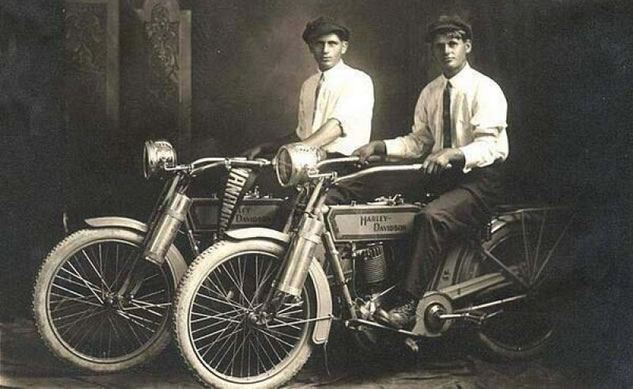

È il 1903 quando due amici ventenni, William Harley e Arthur Davidson, si incontrano in un garage a Milwaukee per costruire una bicicletta motorizzata. Le vendite del prototipo vanno bene e l’azienda viene fondata ufficialmente lo stesso anno. Nel 1906, con il contributo dei fratelli di William e Arthur, nasce il primo stabilimento di produzione e, progressivamente, la vendita di motociclette viene rivolta agli agenti di polizia. Durante la Prima Guerra Mondiale lo Stato americano richiese un gran numero di veicoli per le operazioni militari, ed è proprio questo il periodo della svolta per la Harley Davidson. Grazie a questa opportunità, la HD diventa l’azienda produttrice di moto più grande al mondo. Anche la Seconda Guerra Mondiale porta una serie di successi alla casa produttrice di moto americana, che raddoppia la produzione e le vendite. Dopo il rischio di bancarotta, gli anni ‘50 diventano un periodo di grande splendore per l’azienda, dovuto alle star del cinema e della musica, come Elvis Presley, che sceglievano le iconiche motociclette per andare a spasso tra le strade di Hollywood. La storia del marchio continua ad arricchirsi di anno in anno con importanti riconoscimenti nelle corse motociclistiche, vicende curiose, come il tentativo di brevettare il suono del motore tipico delle Harley Davidson, e una comunità invidiabile di fan aggiornatissimi che partecipano a tutti gli eventi di HD.

L’azienda americana vanta il club di motociclisti più grande del mondo: stiamo parlando dell’Harley Owners Group (H.O.G.). Organizzati in “chapter” locali (sedi) sono milioni gli iscritti al club di possessori e amanti della Harley Davidson. Diventando soci del club, è possibile accedere ad una serie di vantaggi, come l’ingresso gratuito al museo della Harley Davidson ed ai tour/eventi ufficiali. Per entrare nell’HOG è necessario pagare una quota annuale di diversa entità a seconda che l’interessato sia un possessore di motociclette Harley Davidson (che diventa membro a pieno titolo) o un membro della famiglia di un socio a pieno titolo.